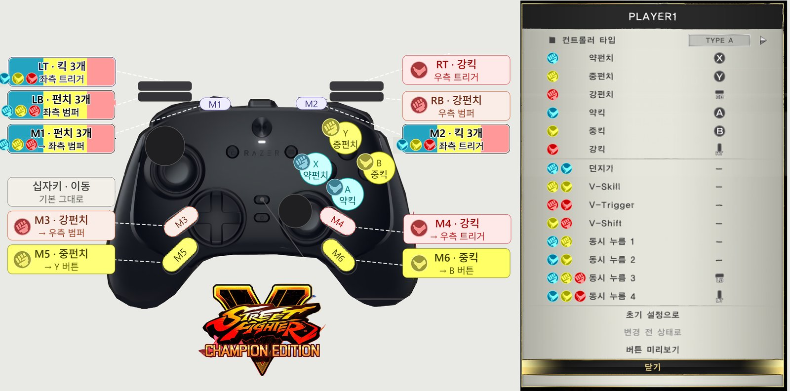

🖥️ PART 1 — 기술 세팅
컨트롤러 · 입력 세팅
레이저 울버린 V3 프로 8K PC (Razer Wolverine V3 Pro) 설정 (2026-09-26)

PC(Steam) 기준. Xbox 방식(XInput) 패드라 게임이 바로 인식한다. 버튼 매핑은 Razer Controller 앱이 패드 안에서 처리한다.
① 게임 안 버튼 설정 (옵션 → 버튼 설정, TYPE A)
| 기능 | 버튼 |
|---|---|
| 약펀치 (LP) | X |
| 중펀치 (MP) | Y |
| 강펀치 (HP) | RB |
| 약킥 (LK) | A |
| 중킥 (MK) | B |
| 강킥 (HK) | RT |
| 동시 누름 3 (펀치 3개, 3P) | LB |
| 동시 누름 4 (킥 3개, 3K) | LT |
던지기·V스킬(V-Skill)·V트리거(V-Trigger)·V시프트(V-Shift)는 비워 두고 두 버튼 동시 누르기로 쓴다.
② Razer 앱 → 커스텀 설정 (M1~M6)
| M 버튼 | 앱에서 고른 항목 | 게임 기능 |
|---|---|---|
| M1 (위쪽 왼쪽) | 왼쪽 범퍼 | 펀치 3개 |
| M2 (위쪽 오른쪽) | 왼쪽 트리거 | 킥 3개 |
| M3 (뒷면 왼쪽 위) | 오른쪽 범퍼 | 강펀치 |
| M4 (뒷면 오른쪽 위) | 오른쪽 트리거 | 강킥 |
| M5 (뒷면 왼쪽 아래) | Y 버튼 | 중펀치 |
| M6 (뒷면 오른쪽 아래) | B 버튼 | 중킥 |
- 십자키 방향 8-WAY (대각선 커맨드용)
- 폴링레이트 1000Hz (스파5는 60프레임이라 충분. 더 올리면 배터리만 더 씀)
③ Razer 앱 → 썸스틱- 데드존 좌우 7% (스틱 이동 시 오입력이 있으면 10~12%로)- 원형 모드 표준, 이중 데드존 방지 켜기
④ 트리거 락 (물리 스위치)- 패드 뒷면 위쪽의 슬라이드 스위치 두 개. 자물쇠 방향으로 밀면 트리거가 마우스 클릭처럼 짧게 눌린다. 둘 다 잠근다.
⑤ Steam Input 끄기- Steam → 스파5 → 컨트롤러 설정 → Steam Input 사용 안 함. Razer 앱과 이중으로 변환되는 걸 막는다. 끈 뒤 패드가 인식되지 않을 때만 다시 켠다.
⑥ 확인- 버튼 설정 화면의 "버튼 미리보기" 또는 트레이닝 모드의 입력 표시로 M1~M6를 하나씩 눌러 본다.- (시도해 볼 것 · 확인 필요) M1·M2를 앱에서 썸스틱 누르기(LS/RS)로 바꾸고 게임에서 V트리거·던지기 등에 등록하면 한 버튼으로 쓸 수 있다. 스파5가 스틱 누르기 입력을 이 메뉴에서 받는지는 아직 확인하지 않았다.
🎮 PART 2 — 게임플레이 가이드
기본 조작 · 캐릭터
아직 기록이 없어요.
진행 기록
Q1. 울버린 V3 프로 패드 세팅 (2026-09-26)
레이저 울버린 V3 프로로 스파5를 하기 위한 버튼 배치를 정했다. 뒷버튼 M3~M6에 강·중 공격, M1·M2에 펀치 3개·킥 3개를 넣어 엄지를 십자키와 약공격에서 떼지 않아도 되게 했다. 자세한 설정은 PART 1 "컨트롤러 · 입력 세팅" 참고.